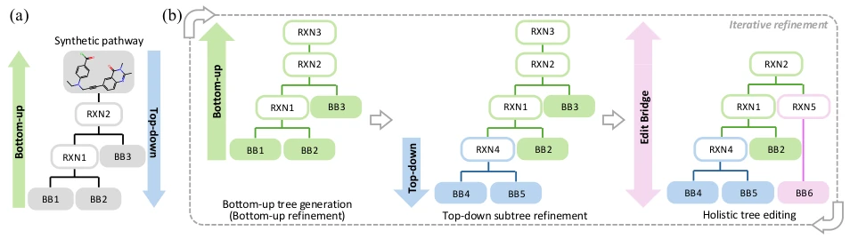
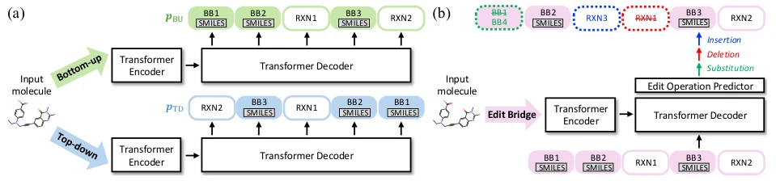
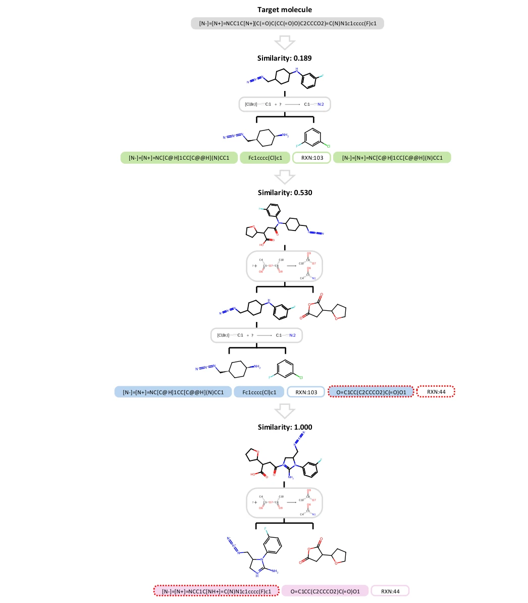
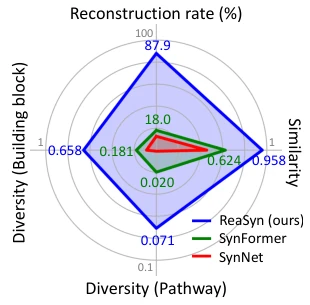
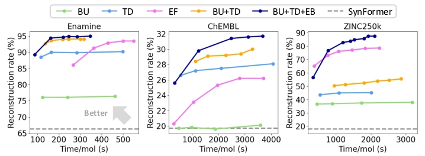
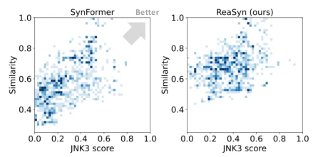
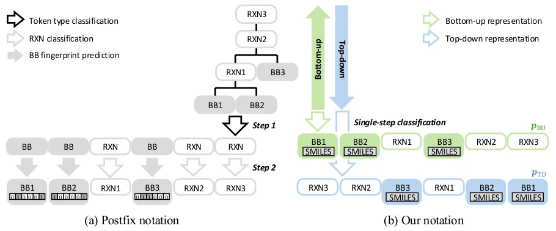
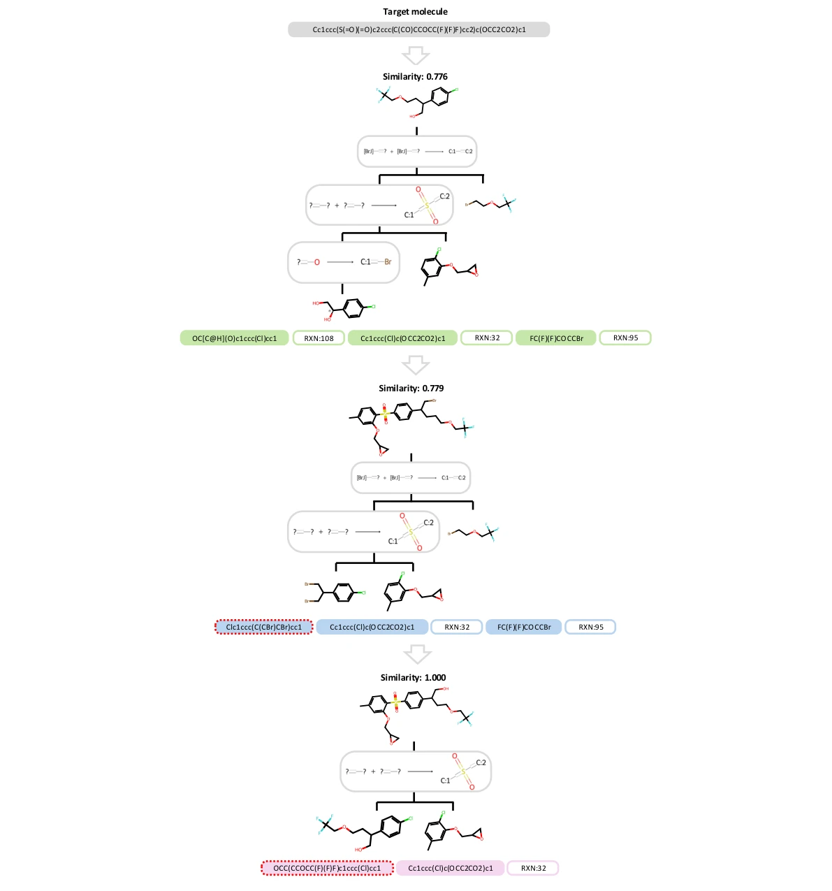
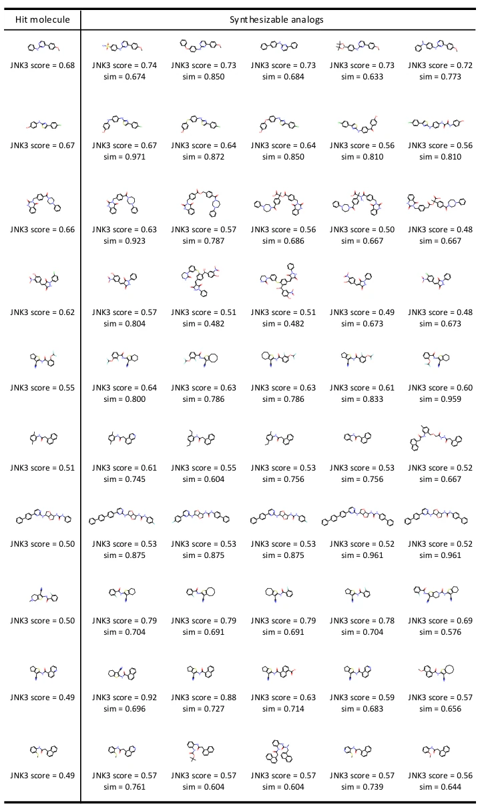

The biggest predicament of molecular generation models is "drawing cakes to satisfy hunger" — the generated molecules are fundamentally impossible to synthesize in the laboratory. ReaSyn attempts to solve this chronic issue using a strategy of "iterative road-building". It is not satisfied with unidirectional generation, but implements a top-down and bottom-up bidirectional decoding loop, and adds a global editing module. Although it sounds promising, the computational cost is estimated to be not low, after all, it requires running multiple decodings and edits. However, the data is indeed impressive, the reconstruction rate rose from 18% to 87.9%, which counts as a miracle in chemical space. But do not get too excited too soon, this method relies on specific reaction rules and building block libraries, changing the library might require retraining, generalizability remains to be verified. Overall, this is a smart approach that treats "being able to be made" as a hard constraint, much more reliable than methods that rely on scoring functions to guess synthetic feasibility, at least the paths are actually computed solidly.
The core pain point in drug discovery lies in the design space being too large, and multi-objective optimization often ignores synthetic feasibility. Existing molecular generation models often produce synthetically unreachable candidates [11]. Although some methods attempt to introduce synthetic scores as optimization objectives, these heuristic scores are often merely proxy metrics, unable to consider actual building block inventory or reaction selectivity [11]. Another approach is to generate synthetic paths rather than generating molecules directly, such as SynNet [12] and SynFormer [14]. However, these methods perform poorly when covering the huge combinatorial chemical space, with reconstruction rates and path diversity both limited. Especially when facing out-of-distribution molecules or unseen building blocks, existing projection methods find it difficult to reliably suggest synthetic paths. Therefore, a new framework capable of deeply reasoning synthetic paths and effectively navigating within the synthesizable space is needed to address the issues of insufficient coverage and lack of reasoning capability in existing methods.
The core of ReaSyn is an iterative generation path refinement framework. The overall process is divided into three steps: first, use an autoregressive model to generate an initial synthetic tree in a bottom-up (BU) direction; second, randomly select subtrees to perform re-prediction in a top-down (TD) direction, achieving subtree-level refinement; finally, perform global editing on the entire path through the Edit Bridge model. In terms of representation, it abandons traditional hierarchical fingerprint representation, directly using SMILES sequences to represent building blocks, eliminating information loss. During training, the model randomly switches between BU and TD directions, controlling the decoding direction through simple token probability bias. Edit Bridge is based on Edit Flow, establishing coupling between the generation distribution and data distribution through insertion, deletion, and replacement operations, thereby jointly editing the tree skeleton and semantics at the sequence level. This mechanism of bidirectional iteration plus global editing enables the model to better handle dependencies between tree nodes, ensuring updates propagate to root and leaf nodes, achieving multi-view path generation.

Figure 2 | (a) Bottom-up and top-down traversal of a synthetic tree. (b) Overall framework of ReaSyn. ReaSyn’s generation cycle consists of three steps. First, an initial synthetic tree is generated by the autoregressive model in a bottom-up direction. Next, the autoregressive model repredicts a randomly selected subtree in a top-down direction. Finally, the Edit Flow model refines the generated tree in a holistic manner. This process can be repeated multiple times, and the best pathway that yields a product molecule of the highest similarity to the given target molecule is selected as the final solution. The sampling processes of the autoregressive model (the first and the second steps) and the Edit Bridge model are depicted in Figure 3(a) and Figure 3(b), respectively.

Figure 3 | ReaSyn adopts an encoder-decoder Transformer architecture. After the encoder encodes the input molecule, the decoder predicts the synthetic pathways of its synthesizable analogs. [START] and [END] tokens are omitted for simplicity. (a) Bidirectional synthetic pathway generation of ReaSyn. ReaSyn’s autoregressive model predicts the synthetic pathways in the sequential representation. ReaSyn’s training and inference scheme tailored for the bidirectional synthetic pathway generation enables to designate a specific sampling direction using a single autoregressive model. (b) Holistic pathway editing of ReaSyn. ReaSyn’s Edit Bridge model takes the full pathway generated by the autoregressive model and jointly edits the tree skeleton and semantics.

Figure 8 | Examples of ReaSyn’s generation cycle. All sequences are represented in a bottom-up order.
Experiments cover synthetic molecule reconstruction, target-oriented optimization, and lead compound expansion. Datasets include ZINC250k, Enamine, and ChEMBL. Baselines include SynNet [12] and SynFormer [14]. In the ZINC250k reconstruction task, ReaSyn's reconstruction rate reaches up to 87.9%, far exceeding SynFormer's 18.0%, and building block diversity is significantly higher. In target-oriented optimization, Graph GA-ReaSyn combined with genetic algorithm achieves SOTA performance on both TDC and sEH tasks, proving its ability to optimize properties while maintaining synthesizability. Ablation experiments show that bidirectional iteration (BU+TD) is more effective than unidirectional sampling, and adding Edit Bridge further improves performance. This indicates that the multi-view path generation strategy is crucial for exploring combinatorial space, and the framework has good generalizability and can be used in combination with other optimization methods.

Figure 1 | Synthesizable molecule re- construction results on ZINC250k. Full results are provided in Table 1.

Figure 4 | Ablation study on synthesizable molecule reconstruction.

Figure 5 | The distribution of JNK3 scores and analog similarity of SynFormer and ReaSyn.

Figure 7 | Comparison of the postfix notation and our notation. [START] and [END] tokens are omitted for simplicity. The postfix notation [29, 14] represents a synthetic pathway with a bi-level sequence consists of the token type level and the token feature level (i.e., the Morgan fingerprints for [BB] tokens and the reaction class for [RXN] tokens). Consequently, the synthetic pathways are embedded and generated in a hierarchical way in each autoregressive step. In contrast, our proposed notation uses a unified vocabulary without hierarchy to represent the complementary sequences 𝑝BU and 𝑝TD.

Figure 9 | Examples of ReaSyn’s generation cycle (continued). All sequences are represented in a bottom-up order.

Figure 10 | Examples of hit molecules and generated synthesizable analogs by ReaSyn in JNK3 hit expansion. JNK3 inhibition score measured by the JNK3 proxy and similarity to the input hit are provided at the bottom of each generated analog.